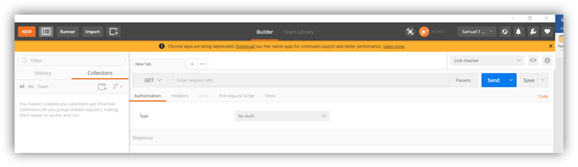
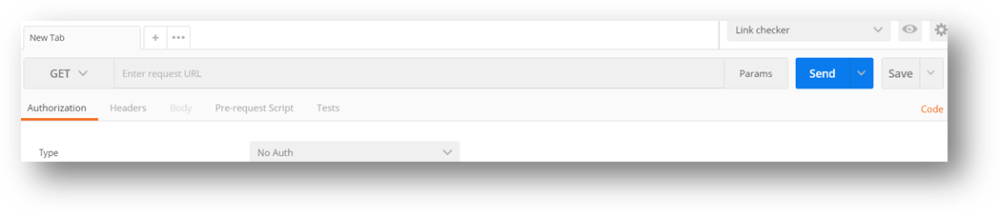
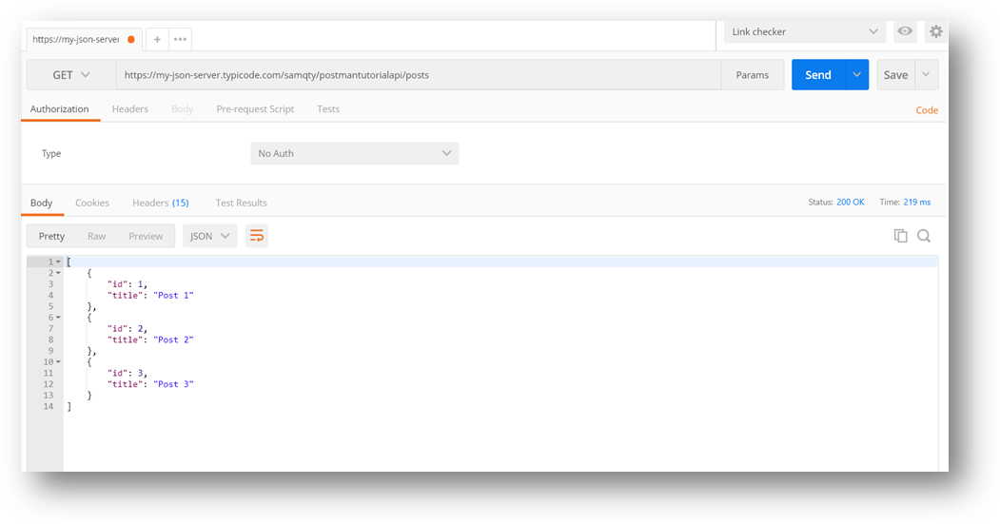

Let’s start with the most common http web API request, the GET request. By default, when you open up postman you should see a blank request tab open like below:

- For our manual testing we will spend most of our time on the address area of the request, make sure “GET” is selected as the method.

- Enter this address to the request URL:
https://my-json-server.typicode.com/samqty/postmantutorialapi/posts
- Then click on the “Send” button
- You should get a screen like the one below, as you can see there is a wealth of information about the web api end point you can get here:

- The body shows a well formatted JSON response
- You can also see the HTTP Response code returned
- And How long the request took